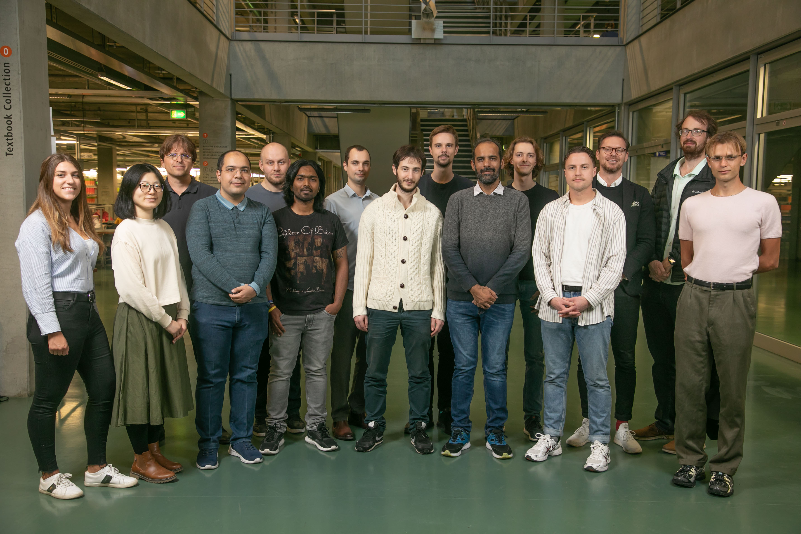

Home
People
Research
Publications
All
By date
By type
Courses
Theses
Jobs
Contact
Intelligent Networks
TU Berlin,
FG INET/ EN 18,
Einsteinufer 17,
10587 Berlin,
Phone: +49 30 314 75170,
Fax: +49 30 314 78550
Internet Network Architectures

Members of FG INET (April 2015)
© Fabian Schneider / Philipp S. Schmidt
News
Stefan Schmid is the new head of the INET group
In May 2021 Stefan Schmid has been appointed Professor and new head of the INET research group.
Anja Feldmann goes to Max-Planck-Institut for computer science
Since January 2018 Anja Feldmann is a new director at Max-Planck-Institut for computer science in Saarbrücken. She established a new research group named Internet Architecture (INET) in the field of network architectures and wide-area data analytics.
Welcome to FG INET
News & Events at FG INET
News and Events
General News
Networking Lecture Series
General Talks
Teaching at FG INET
Teaching
Current term
General information
FAQ
People at FG INET
People
Anja Feldmann
Research at FG INET
Research
Publications
Tweets by @ct_inet